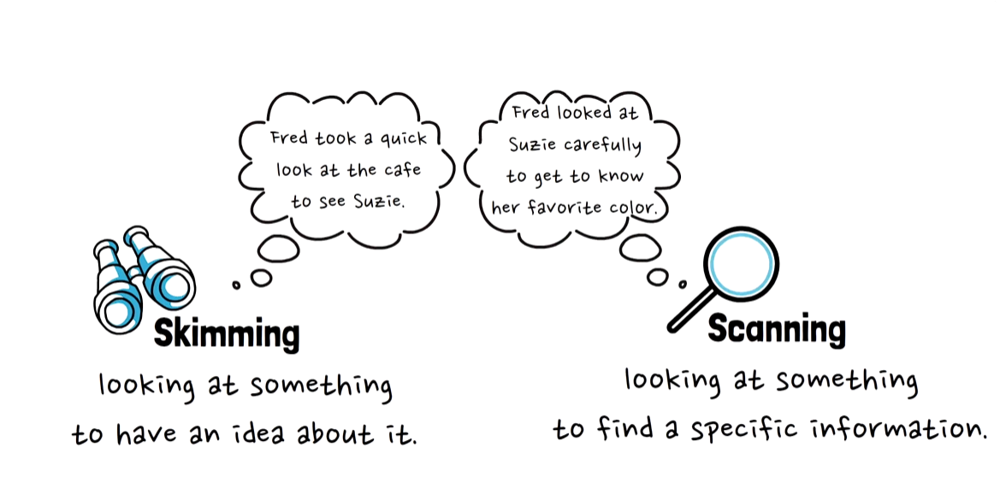
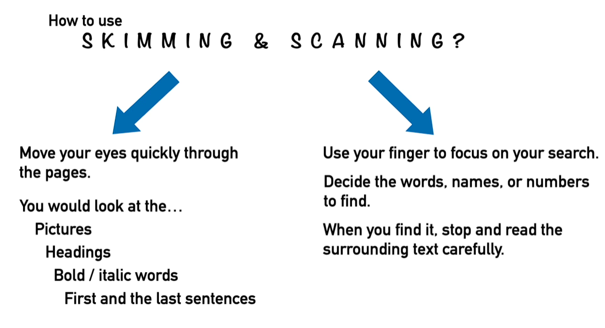

Start here. This week's first task is a reading strategy lesson. You will learn two ways to read faster — skimming and scanning — then try them in a 20-second game and watch the full video. When you finish, continue to the main lesson.
1 · What are skimming and scanning?
Skimming and scanning are two reading techniques that help you find information quickly. They are not the same.
Skim = binoculars
Look over the whole text quickly to get the general idea. You do not read every word.
"What is this text about?"
Look over the whole text quickly to get the general idea. You do not read every word.
"What is this text about?"
Scan = magnifying glass
Look through the text for one specific piece of information: a name, a number, a date, a word.
"Where exactly is X?"
Look through the text for one specific piece of information: a name, a number, a date, a word.
"Where exactly is X?"

2 · How do I use them?

Skim: pictures, headings, bold / italic words, the first and last sentence of each paragraph.
Scan: decide what you are looking for, move your eyes quickly, stop only when you find it, then read the words around it carefully.
3 · In action: Finding Suzie (20 seconds)
Fred is looking for his friend Suzie in a busy café. This is what he knows about her:
- long dark hair
- a red hair tie
- a pink top
- one hand raised to her head
Scan the café scene and find Suzie before the timer stops. Do not look at every face — scan for the features above.
20s

Show where Suzie is

4 · Watch: the whole video
Watch the full video together. Notice how Fred looks around the café, and how he finally finds Suzie.